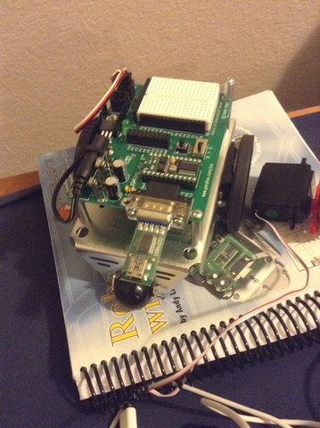

Last week everyone was gone. Matt's wife Miriam, Loren, and Deb were all gone all week, and Jachin was gone until Wednesday. It felt like Matt and I were the only people on the farm for a lot of the week. (Matt's parents were also here, and so were the Mixes, but I don't have a whole lot of contact with them on a regular basis.) And while that freed me up to get some good work done, you've got fair warning that it's a lot of tech stuff this week.
One of the big events this week is that the replacement switches came in. I played around with one of the switches until it worked, which turned out to be surprisingly easy. It's now set up in the farmhouse. So, that went well. Just waiting for the Bradleys to get back now so that I can install the other one.
What I'm really waiting for is when the rest of the switches come in later this week. Matt and I finalized plans on how to tear down the current mess of a network and erect a new one from the ashes. That should be happening this Friday or Saturday night, if the parts come in.
Because the farm was comparatively empty, Matt and I got to talk tech this week. We spent a lot of time talking aobut what needed to stay in the phone configuration and what needed to go away. We also spent a lot of time putting together a timetable for when different parts of my work need to be done.
Something else I'm excited about is that he's given me passwords for more computers! I now have logins on our two file servers, our DNS servers, and another server which, as of now, has an undetermined purpose. (Perhaps Jango, but I can't tell.) As I'm preparing to update all of the systems on the farm, it's good to know what we've currently got on hand.
Matt insisted that I learn something that will help me next semester outside of the farm network, and I told him that I'm going to be on a robotics team this coming semester. We talked to the local high school robotics sponsor, and he lent me some robot parts for me to tinker with. It might not be much, but it's a start!

Everyone on the farm gathered in the farmhouse for the Fourth of July, and Matt's parents (Mark and Jan) made hot dogs and hamburgers. Even Steve (the main farm worker here, who I see very little of) came over for dinner. Then, because we couldn't shoot fireworks around the farm due to the drought, we watched the DC fireworks on TV.
This coming week I'm looking forward to putting together scripts to set up a maintenance computer and the gateway, and also a complete wiring refactoring.
And now, I'm going to get back to work.